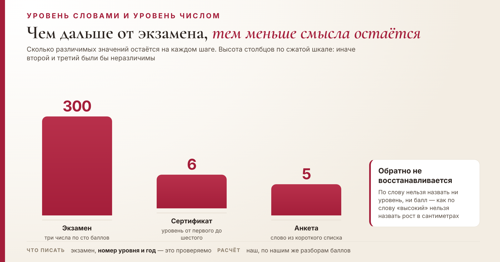
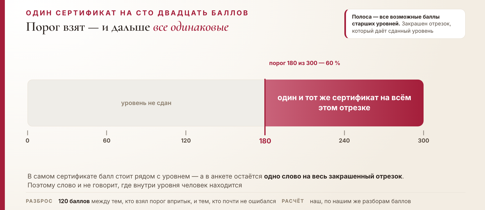

Экзамен
HSK 4 — это intermediate? Почему единой таблицы нет и что писать в резюме


Сертификат называет уровень числом, а анкета просит слово. Общепризнанной таблицы между ними не существует, и это не отговорка: соответствие спорят сами преподаватели, а разные анкеты называют один и тот же сертификат по-разному.
Разберу, откуда берутся эти слова, где именно теряется точность и что писать в резюме, чтобы вас поняли правильно. Что такое сам сертификат и что в нём написано, разобрано отдельно: сертификат HSK: что это за экзамен и что он подтверждает.
Короткий ответ: таблицы нет, и это не отговорка
Если вам нужно одно слово, честный ответ такой: его не существует. Любое, которое я назову, в соседней анкете будет означать другую ступень.
Почему так. Словесные ступени описывают, что человек умеет делать, а экзамен измеряет результат в баллах. Это два разных способа говорить об уровне, и общего знаменателя у них нет.
Схемы соответствия существуют, и не одна. Они расходятся между собой, а спор о них разобран у нас в статье про уровни знания китайского — здесь я его пересказывать не буду.
Что делать вместо перевода. Указывать то, что проверяется: экзамен, номер уровня и год сдачи. Это понятно любому, кто вообще знает, о чём речь, и не требует толкования.
Дальше — о том, почему перевод в принципе не работает, и о практических формулировках для резюме и анкет.
Оговорюсь сразу: речь только о словесных ступенях из анкет и вакансий. Официальные схемы соответствия — отдельная история, и разбирать их здесь я не буду.
Откуда берутся «intermediate» и «upper intermediate»
Эти слова пришли не из экзаменов по китайскому. Это ступени описательных шкал, которыми пользуются при найме и в учебных программах.
Устроены они иначе, чем экзамен. Ступень описывает, что человек может делать: понимать бытовую речь, читать несложные тексты, вести рабочую переписку. Числа в таком описании нет вовсе.
Ступеней в таких списках обычно пять: от начальной до продвинутой, и «intermediate» с «upper intermediate» стоят в середине, рядом друг с другом.
Отсюда первая сложность. Между соседними ступенями граница размыта: один и тот же человек в разных анкетах окажется по разные стороны от неё, и оба раза это будет честно.
Вторая сложность — в том, что ступени описывают разные навыки вперемешку. Человек может свободно читать и плохо говорить, и в одну ступень это не укладывается никак.
Для китайского это особенно заметно: чтение и речь здесь расходятся сильнее, чем в языках с привычным алфавитом. Можно разбирать документы и теряться в разговоре — и наоборот.
А у экзамена граница как раз чёткая: есть порог в баллах, и он либо взят, либо нет. Соединить эти две логики без потерь нельзя, и именно поэтому единой таблицы и не получилось.
Ещё одна причина, о которой говорят реже. Словесные ступени складывались в преподавании европейских языков, где устная и письменная стороны идут рядом. Китайский устроен иначе, и шкала под него просто не затачивалась.
Это не делает ступени бесполезными: в разговоре они экономят время, и все примерно понимают, о чём речь. Но как единица измерения они не работают.
Где теряется точность
Перевод идёт в одну сторону и на каждом шаге отбрасывает часть сведений. Проследим по шагам: от того, что происходит на экзамене, до того, что остаётся в анкете.
Это не придирка к формальностям. Именно здесь и прячется ответ на вопрос, почему таблицы нет: её невозможно составить так, чтобы она работала в обе стороны.
| Шаг | Что было | Что стало | Значений осталось |
|---|---|---|---|
| Экзамен | балл за каждый раздел | три числа по сто баллов | 300 |
| Сертификат | сумма баллов | уровень от первого до шестого | 6 |
| Анкета | уровень | слово из короткого списка | 5 |
От экзамена к сертификату шкала сужается в пятьдесят раз: триста возможных значений превращаются в шесть. От сертификата к слову — ещё немного, до пяти ступеней.
Обратно это не восстанавливается. По слову «intermediate» нельзя сказать ни уровня, ни балла — ровно так же, как по слову «высокий» нельзя назвать рост в сантиметрах.

Это наш расчёт по числам из наших же разборов баллов, а не чья-то опубликованная оценка. Как устроены баллы по разделам, разобрано здесь: система оценки HSK 4.
Практический вывод из этой таблицы один: чем ближе к началу цепочки вы говорите, тем точнее вас поймут. Балл точнее уровня, уровень точнее слова.
Отсюда же понятно, почему спорят о соответствии. Спор идёт не о фактах, а о том, куда отнести промежуточные случаи, — а при таком сужении шкалы промежуточным оказывается почти всё.
И почему разные анкеты дают разные ответы. Каждая проводит границы по-своему, и ни одна не ошибается: просто они делят один и тот же отрезок в разных местах.
Есть и третья потеря, которую таблица не показывает. Экзамен измеряет три стороны языка отдельно, а в сертификат попадает только сумма — распределение по разделам в одно число не умещается.
Поэтому два человека с одинаковым баллом могут быть сильны в разном: один вытянул на чтении, другой на аудировании. Для работодателя это иногда важнее самого уровня.
Отсюда и совет, который я даю чаще всего. Если распределение по разделам у вас неровное, упомяните это словами там, где есть место: не «средний уровень», а «читаю свободно, говорю хуже». Такая фраза точнее любой ступени.
Она же честнее. Собеседник сразу понимает, на что рассчитывать, и не обнаруживает разрыв между заявленным и настоящим на первом же разговоре.
Вопрос «HSK 4 — это какой уровень по-английски» мне задают регулярно, и обычно человек ждёт короткого ответа: назовите слово, я впишу его в резюме.
Короткого ответа у меня нет, и первое время я чувствовала себя неловко: выглядит как уход от вопроса, хотя это и есть честный ответ.
Потом я стала спрашивать в ответ: а кто это прочитает? Если работодатель — какой, если анкета вуза — какая. От этого зависит всё.
Чаще всего выясняется, что слово требуется не само по себе. В анкете стоит выпадающий список, и выбрать нужно что-то одно, иначе форма не отправится.
В этом случае совет простой: выбирайте ступень, а рядом, в свободном поле, пишите сертификат с уровнем и годом. Список тогда перестаёт быть вашей проблемой.
Была и обратная история. Ученица вписала в резюме слово, которое показалось ей скромным, и на собеседовании выяснилось, что её китайский сильно выше ожидаемого.
Ей это стоило вилки по зарплате: разговор с самого начала шёл не о тех задачах. Сертификат в резюме стоял, но мелко и в самом низу.
Вывод, который я делаю: слово в анкете — это не ваш уровень, а формат поля. Уровень живёт в сертификате, и его стоит писать первым.
Что писать в резюме и анкете
Формула из трёх частей. Первые две обязательны, третья — по желанию.
| Что писать | В каком виде | Зачем |
|---|---|---|
| Сертификат и уровень | название экзамена с номером уровня | это проверяемо |
| Год сдачи | месяц и год | у сертификата есть срок действия |
| Балл, если он высокий | число из сертификата | внутри уровня разброс большой |
Год нужен не для красоты. У сертификата есть срок действия, и запись без даты читается хуже: непонятно, актуален документ или нет. Сколько он действует, разобрано в отдельной статье.
Если сертификат старый, а язык вы с тех пор не бросали, так и напишите: сертификат с годом, а рядом — чем занимались после. Пустой промежуток между датой и сегодняшним днём читается хуже, чем заполненный.
Балл стоит добавлять, если он высокий. Внутри сданного уровня разброс — сто двадцать баллов, и число сразу показывает, где вы в этом промежутке.
Если форма требует выбрать слово из списка и без этого не отправляется — выбирайте, но рядом, в свободном поле, напишите сертификат. Тогда выбор из списка ничего не решает: рядом стоит проверяемое.
И не заменяйте сертификат словом в основном блоке резюме. Слово читают по-разному, а экзамен с уровнем — одинаково.
Отдельно про устный экзамен. Если вы его сдавали, пишите рядом: он закрывает ровно ту сторону языка, о которой письменный сертификат молчит. Для работы с живым общением это весомее лишних баллов.
А если не сдавали и разговорная сторона у вас сильная, честнее написать об этом словами, чем надеяться, что её додумают по сертификату. Додумывают обычно в другую сторону.
Если в требовании стоит именно «intermediate»
Такое бывает часто, и это не повод теряться. Три варианта действий, по порядку.
- Спросить, что имеется в виду — часто за словом стоит конкретный сертификат, просто его не выписали в требование.
- Назвать свой уровень числом — это проверяемо и не требует ничьего толкования: экзамен, номер уровня, год сдачи.
- Описать задачи, а не ступень — что вы можете делать на языке: читать переписку, вести встречу, разбирать документы.
Первый вариант срабатывает чаще, чем кажется. Во многих требованиях слово стоит по привычке, а за ним — вполне конкретное ожидание, которое автор просто не выписал.
Второй вариант хорош тем, что не требует ничьего толкования: номер уровня либо устраивает, либо нет, и это выясняется сразу, а не на собеседовании.
Третий вариант — самый сильный в разговоре, но плохо помещается в анкету. Перечислите задачи, которые вы делаете на языке: читаете переписку, ведёте встречу, разбираете документы. Это понятнее любой ступени.
Его же стоит держать наготове к собеседованию. Вопрос «какой у вас уровень» там задают почти всегда, и ответ списком задач звучит увереннее, чем слово, которое собеседник истолкует по-своему.
Какой уровень под какую задачу обычно просят при поступлении, разобрано отдельно — для работы логика похожая: требования к количеству слов и знаков по уровням.
Чего делать не стоит — выбирать ступень повыше «на всякий случай». Проверяется это на первом же разговоре, и дальше весь разговор идёт о том, почему заявленное не совпало с увиденным.
Занижать тоже не стоит, и по той же причине: задачи будут обсуждать не те. Самая удобная позиция — назвать проверяемое и дать собеседнику судить самому.
Почему внутри одного уровня люди разные
Это объясняет и разнобой в словах, и ощущение, что сертификат «не отражает».
| Уровень | Максимум | Порог | Доля |
|---|---|---|---|
| HSK 1 | 200 | 120 | 60 % |
| HSK 2 | 200 | 120 | 60 % |
| HSK 3 | 300 | 180 | 60 % |
| HSK 4 | 300 | 180 | 60 % |
| HSK 5 | 300 | 180 | 60 % |
| HSK 6 | 300 | 180 | 60 % |
Порог везде один и тот же в долях — 60 процентов. Но сдавшим считается любой результат от порога и выше, а это промежуток шириной в сто двадцать баллов на старших уровнях.
Отсюда и разные люди с одинаковым документом. Один взял порог впритык, другой почти не ошибался, а сертификат у них одинаковый, и слово в анкете тоже будет одно.
Что с этим делать. Если балл высокий — показывать его. Если низкий — не прятать сертификат, но подкреплять его чем-то ещё: устным экзаменом или описанием задач. Про устный экзамен есть отдельный разбор: HSKK: как подготовиться к устному экзамену.
И ещё одно следствие, уже не про резюме. Сданный впритык уровень — не повод считать его пройденным: на следующей ступени материал строится на предыдущей, и дыры в ней видны сразу.
Поэтому между «сдал» и «владею» я всегда ставлю оговорку. Сертификат фиксирует, что порог взят в конкретный день, а не что уровень освоен целиком.
Частые ошибки
- Искать точное соответствие. Его нет, и поиск отнимает время, которое лучше потратить на формулировку.
- Писать в резюме только слово. Его читают по-разному, а сертификат — одинаково.
- Указывать сертификат без года. У него есть срок действия, и запись без даты читается хуже.
- Скромничать с формулировкой. Заниженное слово задаёт разговор не о тех задачах с самого начала.
- Считать, что сертификат отражает речь. Письменный экзамен её не проверяет, для неё есть отдельный.
Чего в статье нет намеренно
- Таблицы соответствия уровней и слов. Её не существует, а выдумывать свою я не буду.
- Разбора схем соответствия и спора о них. Это разобрано в нашей статье про уровни знания китайского.
- Того, что такое сертификат и сколько он действует. Обе темы разобраны отдельно, ссылки стоят в тексте.
- Требований конкретных работодателей. У каждого свои, и меняются они чаще, чем статьи.
- Шагов подготовки к экзамену. Для этого есть отдельный разбор с маршрутом.
И ещё об одном умолчании. Я не называю уровень, который «надо» иметь для работы с китайским: работа бывает очень разной, и требование к языку у переводчика, менеджера по закупкам и преподавателя не совпадает ни в одной точке.
Частые вопросы (FAQ)
HSK 4 — это intermediate или upper intermediate?
Однозначного ответа нет: общепризнанной таблицы между уровнями HSK и словесными ступенями не существует. В разных анкетах один и тот же сертификат называют по-разному, и спорят об этом сами преподаватели. Поэтому надёжнее указывать не слово, а экзамен с номером уровня.
Что писать в резюме, если просят уровень словами?
Выберите ступень из списка, раз форма этого требует, а рядом в свободном поле укажите экзамен, номер уровня и год сдачи. Если балл высокий, добавьте и его: внутри одного уровня разброс большой, и число работает лучше слова.
Какой сертификат получать, если в вакансии стоит «intermediate»?
Сначала спросите, что за этим стоит: часто имеется в виду конкретный сертификат, просто его не выписали в требование. Если спросить не у кого, ориентируйтесь на задачи, которые придётся выполнять, и выбирайте уровень под них.
За сколько лет обучения можно получить сертификат HSK 4?
Это зависит не от числа лет, а от вашего нынешнего уровня и от того, сколько дней в неделю вы занимаетесь. У нас есть отдельный разбор, где срок считается от вашей точки, а не от нуля.
Почему два человека с одним сертификатом говорят по-разному?
Потому что сертификат выдают за результат от порога и выше, а разброс внутри этого промежутка — сто двадцать баллов. Человек, едва перешагнувший порог, и человек с почти полным баллом получают одинаковый документ.
Что вообще такое сертификат HSK?
Документ, подтверждающий сданный уровень письменного экзамена по китайскому. Что в нём написано, кому он нужен и сколько действует, разобрано у нас в отдельной статье — ссылка стоит в тексте.
И напоследок то, что важнее всех чисел выше. Вопрос «как назвать мой уровень» почти всегда задают от неуверенности: кажется, что есть правильное слово, а вы его не знаете. Правильного слова нет ни у кого — есть документ, который вы получили, и задачи, которые вы умеете решать. Это и стоит писать. А если нужно разобраться, какой уровень вам на самом деле нужен и сколько до него осталось, приходите на бесплатный урок: посмотрим вашу задачу и посчитаем.
Источники
- Максимум баллов и порог сдачи — по нашим разборам системы оценки: на первых двух уровнях максимум двести при пороге сто двадцать, на остальных триста при пороге сто восемьдесят.
- Доля порога — 60 процентов на всех уровнях — посчитана мной по этим числам.
- Разброс в сто двадцать баллов внутри сданного уровня и сужение шкалы в пятьдесят раз — наш расчёт, а не опубликованная величина.
- То, что единой таблицы соответствия между уровнями и словесными ступенями не существует, приведено по нашей статье про уровни знания китайского; сами схемы и спор о них разобраны там же.
- Какому слову соответствует какой уровень, я не утверждаю: такого соответствия нет.
- Требований конкретных работодателей не называю.
- Случаи с выпадающим списком в анкете и с заниженной формулировкой в резюме взяты из занятий Kitai School; имён не привожу.